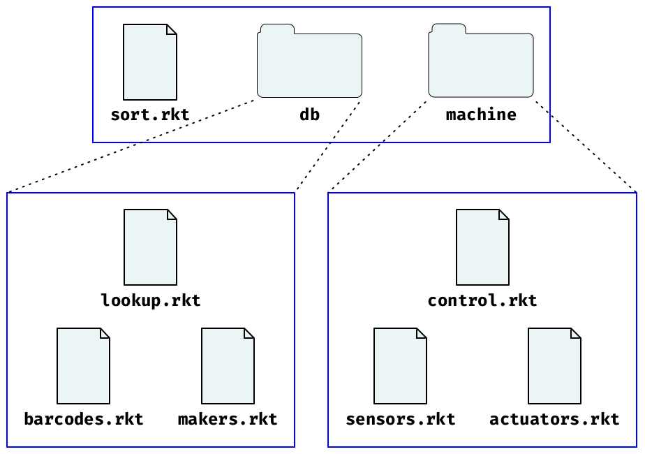

6.1 Module Basics
Each Racket module typically resides in its own file. For example, suppose the file "cake.rkt" contains the following module:
"cake.rkt"
#lang racket (provide print-cake) ; draws a cake with n candles (define (print-cake n) (show " ~a " n #\.) (show " .-~a-. " n #\|) (show " | ~a | " n #\space) (show "---~a---" n #\-)) (define (show fmt n ch) (printf fmt (make-string n ch)) (newline))
Then, other modules can import "cake.rkt" to use the print-cake function, since the provide line in "cake.rkt" explicitly exports the definition print-cake. The show function is private to "cake.rkt" (i.e., it cannot be used from other modules), since show is not exported.
The following "random-cake.rkt" module imports "cake.rkt":
"random-cake.rkt"
#lang racket (require "cake.rkt") (print-cake (random 30))
The relative reference "cake.rkt" in the import (require "cake.rkt") works if the "cake.rkt" and "random-cake.rkt" modules are in the same directory. Unix-style relative paths are used for relative module references on all platforms, much like relative URLs in HTML pages.
6.1.1 Organizing Modules
The "cake.rkt" and "random-cake.rkt" example demonstrates the most common way to organize a program into modules: put all module files in a single directory (perhaps with subdirectories), and then have the modules reference each other through relative paths. A directory of modules can act as a project, since it can be moved around on the filesystem or copied to other machines, and relative paths preserve the connections among modules.
As another example, if you are building a candy-sorting program, you might have a main "sort.rkt" module that uses other modules to access a candy database and a control sorting machine. If the candy-database module itself is organized into sub-modules that handle barcode and manufacturer information, then the database module could be "db/lookup.rkt" that uses helper modules "db/barcodes.rkt" and "db/makers.rkt". Similarly, the sorting-machine driver "machine/control.rkt" might use helper modules "machine/sensors.rkt" and "machine/actuators.rkt".

The "sort.rkt" module uses the relative paths "db/lookup.rkt" and "machine/control.rkt" to import from the database and machine-control libraries:
"sort.rkt"
#lang racket (require "db/lookup.rkt" "machine/control.rkt") ....
The "db/lookup.rkt" module similarly uses paths relative to its own source to access the "db/barcodes.rkt" and "db/makers.rkt" modules:
"db/lookup.rkt"
#lang racket (require "barcode.rkt" "makers.rkt") ....
Ditto for "machine/control.rkt":
"machine/control.rkt"
#lang racket (require "sensors.rkt" "actuators.rkt") ....
Racket tools all work automatically with relative paths. For example,
racket sort.rkt
on the command line runs the "sort.rkt" program and automatically loads and compiles required modules. With a large enough program, compilation from source can take too long, so use
raco make sort.rkt
See raco make: Compiling Source to Bytecode for more information on raco make.
to compile "sort.rkt" and all its dependencies to bytecode files. Running racket sort.rkt will automatically use bytecode files when they are present.
6.1.2 Library Collections
A collection is a hierarchical grouping of installed library modules. A module in a collection is referenced through an unquoted, suffixless path. For example, the following module refers to the "date.rkt" library that is part of the "racket" collection:
#lang racket (require racket/date) (printf "Today is ~s\n" (date->string (seconds->date (current-seconds))))
When you search the online Racket documentation, the search results indicate the module that provides each binding. Alternatively, if you reach a binding’s documentation by clicking on hyperlinks, you can hover over the binding name to find out which modules provide it.
A module reference like racket/date looks like an identifier, but it is not treated in the same way as printf or date->string. Instead, when require sees a module reference that is unquoted, it converts the reference to a collection-based module path:
First, if the unquoted path contains no /, then require automatically adds a "/main" to the reference. For example, (require slideshow) is equivalent to (require slideshow/main).
Second, require implicitly adds a ".rkt" suffix to the path.
Finally, require resolves the path by searching among installed collections, instead of treating the path as relative to the enclosing module’s path.
To a first approximation, a collection is implemented as a filesystem directory. For example, the "racket" collection is mostly located in a "racket" directory within the Racket installation’s "collects" directory, as reported by
#lang racket (require setup/dirs) (build-path (find-collects-dir) ; main collection directory "racket")
The Racket installation’s "collects" directory, however, is only one place that require looks for collection directories. Other places include the user-specific directory reported by (find-user-collects-dir) and directories configured through the PLTCOLLECTS search path. Finally, and most typically, collections are found through installed packages.
6.1.3 Packages and Collections
More precisely, racket/gui is provided by "gui-lib", parser-tools/lex is provided by "parser-tools-lib", and the "gui" and "parser-tools" packages extend "gui-lib" and "parser-tools-lib" with documentation.
Racket programs do not refer to packages directly. Instead, programs refer to libraries via collections, and adding or removing a package changes the set of collection-based libraries that are available. A single package can supply libraries in multiple collections, and two different packages can supply libraries in the same collection (but not the same libraries, and the package manager ensures that installed packages do not conflict at that level).
For more information about packages, see Package Management in Racket.
6.1.4 Adding Collections
Looking back at the candy-sorting example of Organizing Modules, suppose that modules in "db/" and "machine/" need a common set of helper functions. Helper functions could be put in a "utils/" directory, and modules in "db/" or "machine/" could access utility modules with relative paths that start "../utils/". As long as a set of modules work together in a single project, it’s best to stick with relative paths. A programmer can follow relative-path references without knowing about your Racket configuration.
Some libraries are meant to be used across multiple projects, so that keeping the library source in a directory with its uses does not make sense. In that case, the best option is add a new collection. After the library is in a collection, it can be referenced with an unquoted path, just like libraries that are included with the Racket distribution.
You could add a new collection by placing files in the Racket installation or one of the directories reported by (get-collects-search-dirs). Alternatively, you could add to the list of searched directories by setting the PLTCOLLECTS environment variable.If you set PLTCOLLECTS, include an empty path in by starting the value with a colon (Unix and Mac OS) or semicolon (Windows) so that the original search paths are preserved. The best option, however, is to add a package.
Creating a package does not mean that you have to register with a package server or perform a bundling step that copies your source code into an archive format. Creating a package can simply mean using the package manager to make your libraries locally accessible as a collection from their current source locations.
For example, suppose you have a directory "/usr/molly/bakery" that contains the "cake.rkt" module (from the beginning of this section) and other related modules. To make the modules available as a "bakery" collection, either
Use the raco pkg command-line tool:
raco pkg install --link /usr/molly/bakery
where the --link flag is not actually needed when the provided path includes a directory separator.
Use DrRacket’s Package Manager item from the File menu. In the Do What I Mean panel, click Browse..., choose the "/usr/molly/bakery" directory, and click Install.
Afterward, (require bakery/cake) from any module will import the print-cake function from "/usr/molly/bakery/cake.rkt".
By default, the name of the directory that you install is used both as the package name and as the collection that is provided by the package. Also, the package manager normally defaults to installation only for the current user, as opposed to all users of a Racket installation. See Package Management in Racket for more information.
If you intend to distribute your libraries to others, choose collection and package names carefully. The collection namespace is hierarchical, but top-level collection names are global, and the package namespace is flat. Consider putting one-off libraries under some top-level name like "molly" that identifies the producer. Use a collection name like "bakery" when producing the definitive collection of baked-goods libraries.
After your libraries are put in a collection you can still use raco make to compile the library sources, but it’s better and more convenient to use raco setup. The raco setup command takes a collection name (as opposed to a file name) and compiles all libraries within the collection. In addition, raco setup can build documentation for the collection and add it to the documentation index, as specified by a "info.rkt" module in the collection. See raco setup: Installation Management for more information on raco setup.